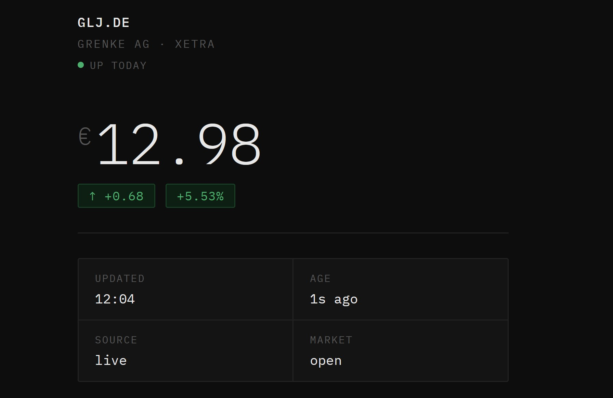

Division IV · Project Documentation
A real-time stock tracker for Grenke AG — built on Cloudflare Workers, Yahoo Finance, and vanilla JS with zero backend cost and no API key exposure.
Browsers can't fetch Yahoo Finance directly — CORS blocks the request. A client-side workaround would expose the upstream URL and hammer Yahoo on every tab load with no caching whatsoever.
A Cloudflare Worker acts as a smart proxy between the browser and Yahoo Finance. It handles CORS, caches responses based on market hours, and fails gracefully — all served from a single self-contained index.html.
Zero backend cost. No API key exposure. Real-time XETRA price data in the browser — and a foundation for a physical ESP32 installation that glows green or red based on the day's performance.
Architecture
Browser → Cloudflare Worker → Yahoo Finance. The Worker is the only component that touches Yahoo, keeping the upstream URL off the client and the cache logic centralised.
┌─────────────────────────────────────────┐ │ Browser │ │ │ │ GLJ.DE frontend (HTML / CSS / JS) │ │ Hosted on Netlify · static │ │ │ │ fetch() every 5 minutes │ └────────────────┬────────────────────────┘ │ HTTPS GET ▼ ┌─────────────────────────────────────────┐ │ Cloudflare Worker │ │ │ │ • CORS preflight (OPTIONS → 204) │ │ • In-memory cache (module-scoped) │ │ • Trading hours (Europe/Berlin) │ │ • TTL: 30 min open · indefinite closed │ │ • Stale fallback if Yahoo unreachable │ └────────────────┬────────────────────────┘ │ HTTPS GET (cache miss only) ▼ ┌─────────────────────────────────────────┐ │ Yahoo Finance v8 chart API │ │ │ │ interval=1m · range=1d │ │ No API key required │ └─────────────────────────────────────────┘
Stack
| Layer | Technology |
|---|---|
| Backend | Cloudflare Workers (V8 isolate) |
| Data source | Yahoo Finance v8 (public) |
| Frontend | Vanilla JS · single HTML file |
| Hosting | Netlify (static) |
| Fonts | IBM Plex Mono / Sans (CDN) |
| Dependencies | none |
Free tier limits
| Resource | Allowance |
|---|---|
| Requests / day | 100,000 |
| CPU / request | 10 ms |
| Egress charge | none |
| Netlify bandwidth | 100 GB / mo |
Cloudflare Worker
The Worker has three responsibilities: proxying Yahoo Finance, caching intelligently around market hours, and never crashing silently — every response is structured JSON, error or not.
function isTradingHours() { const now = new Date(); const day = now.getUTCDay(); if (day === 0 || day === 6) return false; const berlin = new Date().toLocaleString("en-GB", { timeZone: "Europe/Berlin", hour: "2-digit", minute: "2-digit", hour12: false }); const [h, m] = berlin.split(":").map(Number); const decimal = h + m / 60; return decimal >= 9 && decimal <= 17.5; }
{ "symbol": "GLJ.DE", "price": 14.32, // 2 dp "change": +0.45, // vs prev close "changePercent": +3.25, "timestamp": 1715680200, // Unix seconds "cached": false }
How fetchYahoo() parses Yahoo
Frontend DOM targets
| Element | Content |
|---|---|
| price-val | Current price (14.32) |
| change-tag | ↑ +0.45 with arrow |
| pct-tag | +3.25% |
| updated | HH:MM Berlin time |
| age | 4m ago · 2h ago |
| source | live / cached |
| market-status | open / closed |
| dot | Green or red status dot |
Caching Strategy
The Worker uses two module-scoped variables — cacheData and cacheTimestamp — persisting within a single V8 isolate. Cache is per-isolate, not globally shared, so a cold-started isolate always hits Yahoo fresh.
Why 30-minute TTL?
XETRA data from Yahoo Finance is already delayed by ~15 minutes. Polling more frequently than every 30 minutes returns the same stale data — it just burns more requests against Yahoo's informal rate limits. The 30-minute window is a deliberate trade-off between freshness and reliability.
TTL rules
| Condition | Behaviour |
|---|---|
| Market open · cache < 30 min old | Serve cache |
| Market open · cache ≥ 30 min old | Fetch Yahoo · update cache |
| Market closed · cache exists | Serve cache (no expiry) |
| Market closed · no cache | Fetch Yahoo (first load of day) |
| Yahoo unreachable · cache exists | Serve stale + error field |
| Yahoo unreachable · no cache | HTTP 500 |
Data Flow

GLJ.DE dashboard — dark terminal aesthetic, IBM Plex Mono
Step by step
Error Handling
The Worker never crashes silently. Every response — data or error — is structured JSON. The frontend has a matching catch chain for each failure mode.
Layer 1 — Yahoo fails, cache exists
Worker returns the last known good data with an additional error field. The stale price is displayed; no crash, no blank screen.
Layer 2 — Yahoo fails, no cache
Worker returns HTTP 500 with a JSON error body. The frontend catches !res.ok, shows the red error message, leaves price as —.
Layer 3 — Network down entirely
fetch() throws a TypeError. The catch(e) block surfaces the message text and re-enables the refresh button.
Future Vision
The long-term goal is a self-contained artefact — a deep picture frame that wakes when someone stands in front of it, fetches GLJ.DE data, and presents it physically through light and a small display.
How it works
A PIR motion sensor triggers a wake cycle from deep sleep. The ESP32 fetches the latest GLJ.DE data and translates it physically: the green filament glows on a positive day, red on a negative day, with brightness scaled to the magnitude of the change. The OLED shows price and percentage. When no one is present, the device returns to deep sleep to preserve battery.
The web tracker serves as the data and logic foundation — the same Worker endpoint, the same JSON, consumed by a microcontroller instead of a browser.
Hardware components
MCU
ESP32 — WiFi-capable, deep sleep support, runs the fetch + render cycle
Sensor
PIR motion sensor — triggers wake on presence, idle returns to sleep
Lighting
Two coloured incandescent LED filaments — green (up day) / red (down day)
Display
Small OLED — price and percentage change, readable at arm's length
Power
Battery + charging board — self-contained, no mains cable visible
Enclosure
Deep picture frame — houses all components behind the glass
Roadmap
Immediate tasks
Risks & limitations